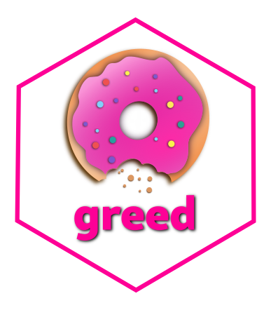
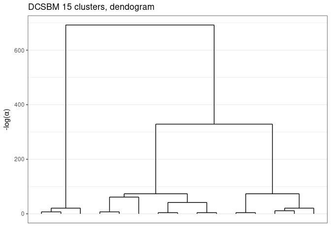
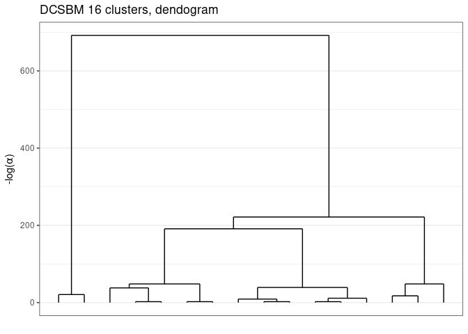
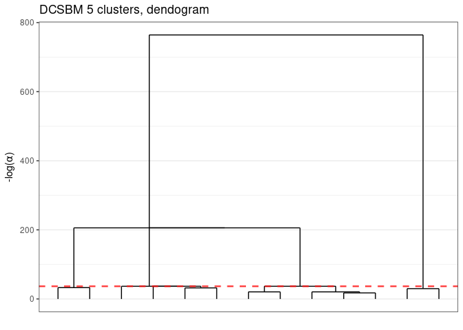
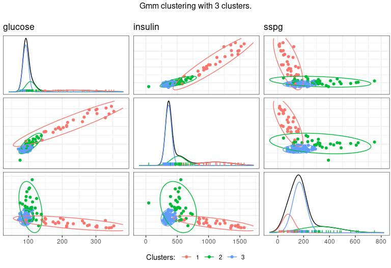

Greed enables model based clustering of networks, matrices of count data and much more with different types of generative models. Model selection and clustering is performed in combination by optimizing the Integrated Classification Likelihood. Details of the algorithms and methods proposed by this package can be found in Côme, Jouvin, Latouche, and Bouveyron (2021) 10.1007/s11634-021-00440-z.

The following generative models are available currently :
-
Stochastic Block Models (see
?`Sbm-class`), -
Degree Corrected Stochastic Block Models (see
?`DcSbm-class`), -
Multinomial Stochastic Block Models (see
?`MultSbm-class`), -
Mixture of Multinomials (see
?`MoR-class`), -
Latent Class Analysis (see
?`Lca-class`), -
Gaussian Mixture Model (see
?`Gmm-class`and?`DiagGmm-class`), -
Multivariate Mixture of Gaussian Regression Model (see
?`MoR-class`), -
Degree Corrected Latent Block Model (see
?`DcLbm-class`). -
Mixed Dlvm’s (see
?`MixedModels-class`).
With the Integrated Classification Likelihood, the parameters of the models are integrated out. This allows a natural regularization for complex models. Since the Integrated Classification Likelihood penalizes complex models it allows to automatically find a “natural” value for the number of clusters K*, the user only needs to provide an initial guess as well as values for the prior parameters (sensible default values are used if no prior information is available). The optimization is performed by default thanks to a combination of a greedy local search and a genetic algorithm. Several optimization algorithms are available.
Eventually, the whole path of solutions from K* to 1 cluster is extracted. This enables a partial ordering of the clusters, and the evaluation of simpler clustering. The package also provides some plotting functionality.
Installation
You can install the development version of greed from GitHub with:
#GitHub
install.packages("devtools")
devtools::install_github("comeetie/greed")Or use the CRAN version:
#CRAN
install.packages("greed")Usage
The main entry point for using the package is simply the greed function (?greed). The generative model will be chosen automatically to fit with the data provided, but you may specify another choice with the model parameter. This is a basic example with the classical Books network ?Books:
library(greed)
data(Books)
sol <- greed(Books$X)
#> ------- guess DCSBM model fitting ------
#> ################# Generation 1: best solution with an ICL of -1346 and 4 clusters #################
#> ################# Generation 2: best solution with an ICL of -1346 and 4 clusters #################
#> ------- Final clustering -------
#> ICL clustering with a DCSBM model, 3 clusters and an icl of -1345.You may specify the model you want to use and set the priors parameters with the (model argument), the optimization algorithm (alg argument) and the initial number of cluster K. Here football is a square sparse matrix and a graph clustering ?`DcSbm-class` model will be used by default, and the Hybrid genetic algorithm greed used.
sol <- greed(Books$X,model=Sbm(),alg=Seed(),K=10)
#> ------- guess SBM model fitting ------
#> ------- Final clustering -------
#> ICL clustering with a SBM model, 5 clusters and an icl of -1257.Some plotting function enable the exploration of the clustering results, the hierarchical structure between clusters:
plot(sol)
Or a summary représentation of the adjacency matrix:
plot(sol,type='blocks')
You may extract the model fitted parameters with the ?coef function, the clustering with the ?clustering function, the value of ICL with ?ICL:
ICL(sol)
#> [1] -1256.988
coef(sol)
#> $pi
#> [1] 0.09523810 0.29523810 0.19047619 0.36190476 0.05714286
#>
#> $thetakl
#> [,1] [,2] [,3] [,4] [,5]
#> [1,] 0.711111111 0.329032258 0.060000000 0.002631579 0.00000000
#> [2,] 0.329032258 0.090322581 0.008064516 0.001697793 0.00000000
#> [3,] 0.060000000 0.008064516 0.231578947 0.019736842 0.04166667
#> [4,] 0.002631579 0.001697793 0.019736842 0.099573257 0.43859649
#> [5,] 0.000000000 0.000000000 0.041666667 0.438596491 0.73333333
table(clustering(sol))
#>
#> 1 2 3 4 5
#> 10 31 20 38 6Eventually, one may explore some coarser clustering using the cut function:

For large datasets, it is possible to use parallelism to speed-up the computation thanks to the future package. You only need to specify the type of backend you want to use, before calling the ?greed function:
Typical use cases
Classical clustering, GMM
See the vignette("GMM") for details.
data("diabetes",package = "mclust")
X <- diabetes[,-1]
sol <- greed(X,model=Gmm())
#> ------- GMM model fitting ------
#> ################# Generation 1: best solution with an ICL of -2421 and 6 clusters #################
#> ################# Generation 2: best solution with an ICL of -2416 and 5 clusters #################
#> ################# Generation 3: best solution with an ICL of -2406 and 3 clusters #################
#> ################# Generation 4: best solution with an ICL of -2396 and 3 clusters #################
#> ################# Generation 5: best solution with an ICL of -2396 and 3 clusters #################
#> ################# Generation 6: best solution with an ICL of -2396 and 3 clusters #################
#> ------- Final clustering -------
#> ICL clustering with a GMM model, 3 clusters and an icl of -2396.
table(diabetes$cl,clustering(sol))
#>
#> 1 2 3
#> Chemical 11 24 1
#> Normal 73 3 0
#> Overt 0 6 27
gmmpairs(sol,X)
Questionnary and item response theory datasets, LCA
See the vignette("LCA") for details.
Graphs, SBM like models
See the vignette("SBM") for details.
Mixture of Regression
See thevignette("MoR") for details.